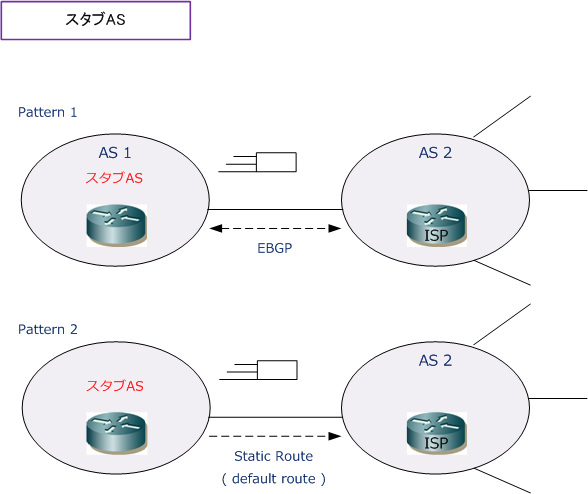
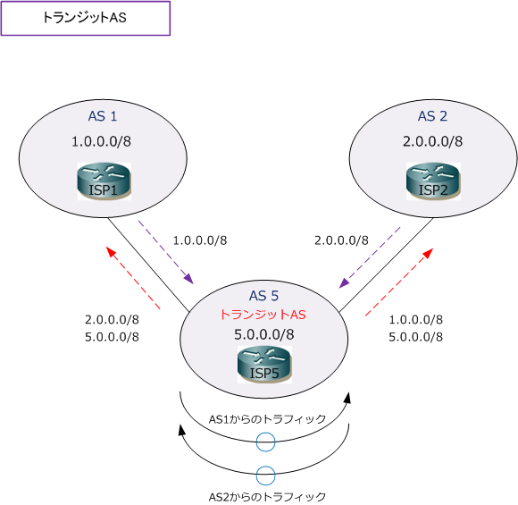
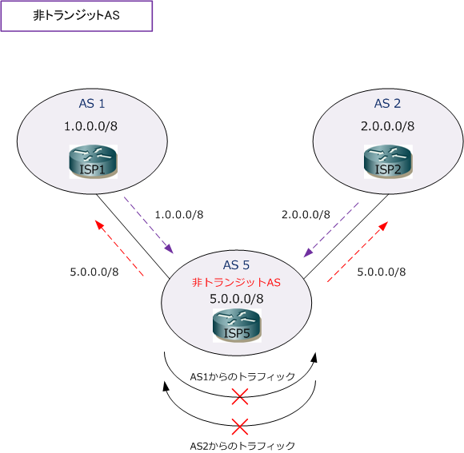

BGP - Stub AS / Transit AS / Non-Transit AS
BGP - ASの分類
BGPのASは、他のASとの接続形態によりスタブAS、トランジットAS、非トランジットASに分類されます。
| ASの種類 | 説明 |
|---|---|
| スタブAS | シングルホームASとも言う。外部の1つのASとだけ接続しているAS。 |
| トランジットAS | 複数のASとマルチホーム接続して、外部AS間のトラフィックを通過させるAS。 |
| 非トランジットAS | 複数のASとマルチホーム接続して、外部AS間のトラフィックは通過させないAS。 |
スタブAS
スタブAS（シングルホームAS）は、外部の1つのASとだけ接続しているASです。また、ASの定義のとおり 1つの独立した管理組織である企業の社内ネットワークを1つのASとして考えた場合は、パターン2のように インターネットの出口であるISPに対してデフォルトルートを設定するネットワークもスタブASと言えます。

トランジットAS
トランジットASは、複数のASにマルチホーム接続して、外部AS間のトラフィックを通過させるASです。 トランジットASでは、自分のAS内のルート情報もアドバタイズしますが、外部ASから受信したルートも アドバタイズします。ISPのASは一般的にトランジットASとなります。

非トランジットAS
非トランジットASは、複数のASにマルチホーム接続し、外部AS間のトラフィックは通過させないASです。 非トランジットASは、マルチホーム非トランジットASとも言います。非トランジットASは、自分のAS内の ルート情報はアドバタイズしますが、外部ASから受信したルートはアドバタイズしません。ISPでないなら トランジットさせる意味とメリットがないことから、グローバルASを持っている企業が、BGP接続によって マルチホーム接続する場合は非トランジットASにします。あくまで自分のASのルートのみをアドバタイズ。

BGPでは、neighbor ～ filter-list コマンドでフィルタリングを行うことで、非トランジットASとなります。 EIGRPやOSPFでいえば、distribute-listなどでルートフィルタリングを行っているような状態を意味します。
企業ネットワークのインターネット接続
多くの企業では、BGPを使用せずに契約したISPに対してデフォルトルートを設定してインターネット網に 接続させています。企業規模が大きく、サービス系インフラも有していて、グローバルASを保持している 場合は、BGPでマルチホーム接続してフルルート（ インターネット上の全てのルート ）を受信する企業も あります。ただしその場合でも、企業ネットワークの接続なら「非トランジットAS」とする構成が多いです。